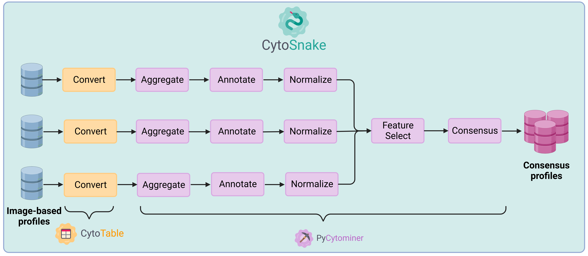
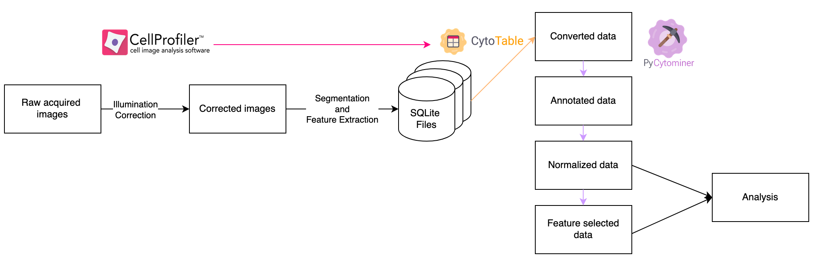
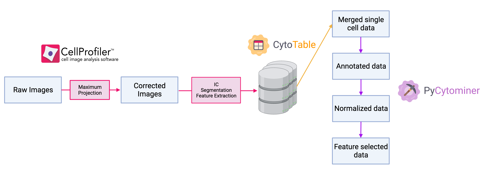
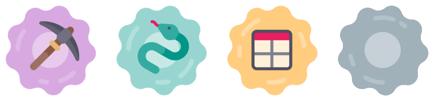

CytoTable: High performance and scalable
single-cell morphology feature engineering
Dave Bunten1,  , Erik Serrano1, , Jenna Tomkinson1, , Michael J. Lippincott1, , Faisal Alquaddoomi1, , Vince Rubinetti1, , Gregory P. Way1,
, Erik Serrano1, , Jenna Tomkinson1, , Michael J. Lippincott1, , Faisal Alquaddoomi1, , Vince Rubinetti1, , Gregory P. Way1,
1 Department of Biomedical Informatics, University of Colorado Anschutz

Introduction
flowchart LR
images[(Microscopy\nimages)]
csv[(CSV files)]
npz[(NPZ files)]
sqlite[(SQLite files)]
extract["Single-cell\nFeature extraction\n(for ex. CellProfiler)"]
csv[(CSV files)]
npz[(others ...)]
sqlite[(SQLite files)]
pycytominer["\nPycytominer\n\n"]
subgraph cytotable["CytoTable (Python package)"]
subgraph spacer [" "]
subgraph parsl ["Data engine: Parsl\n"]
subgraph spacer2 [" "]
subgraph sql["Data language: SQL (DuckDB)"]
subgraph spacer3 [" "]
subgraph queryopt["Query optimizer: DuckDB (runs SQL)"]
subgraph spacer4 [" "]
subgraph representations["Data representations (intermediate and final)"]
arrow[("Apache Arrow\ntable(s)\n(in-memory)")]
parquet[("Parquet dataset(s)\n(serialized)")]
end
end
end
end
end
end
end
end
end
images --> extract
extract --> csv
extract --> sqlite
extract --> npz
csv --> cytotable
sqlite --> cytotable
npz --> cytotable
arrow --> parquet
cytotable --> pycytominer
style sql fill:#A7F3D0,stroke:#999999;
style cytotable fill:#FEF9C3,stroke:#444444;
style parsl fill:#BAE6FD,stroke:#999999;
style representations fill:#F0FDFA,stroke:#999999;
style queryopt fill:#DCFCE7,stroke:#999999;
style spacer fill:#FEF9C3,stroke:#FEF9C3;
style spacer2 fill:#BAE6FD,stroke:#BAE6FD;
style spacer3 fill:#A7F3D0,stroke:#A7F3D0;
style spacer4 fill:#DCFCE7,stroke:#DCFCE7;
Figure 1. The flow of high-dimensional single-cell morphology data with relationship to CytoTable modular data stack components.
We are solving significant scalability and replicability challenges with high-dimensional single-cell morphology data (such as those extracted from CellProfiler[1]) by implementing novel and effective capabilities as a modular, portable, and cross-language single-cell data stack[2]: (a) language frontend: SQL (DuckDB[3]), (b) intermediate representation: Apache Arrow[4] and Apache Parquet[5], (c) query optimizer: DuckDB[3], (d) execution engine: Parsl[6] with Pythonic MapReduce design patterns[7], (e) execution runtime, Python package (PyPI, source)(Figure 1).
Microscopy feature data scalability

Figure 2. Comparing processing time duration for CytoTable and Pycytominer for various datasets of increasing size.

Figure 3. Comparing processing total memory consumption for CytoTable and Pycytominer for various datasets of increasing size.
CytoTable builds upon the shoulders of Pycytominer, helping to streamline the SingleCells.merge_single_cells(...) method.
We decrease overall processsing completion time (Figure 2) and memory consumption (Figure 3) for large amounts of data by leveraging composable data stack elements.
Empowering the Cytomining Ecosystem
Orchestration: CytoSnake
Authors: Erik Serrano, Jenna Tomkinson, Roshan Kern, Vince Rubinetti, Dave Bunten, Gregory P. Way
Figure 4. We orchestrate image-based profiling pipelines using CytoSnake. CytoTable is a critical tool for scalable orchestration.
Applied research: NF1 Schwann cell project
Authors: Jenna Tomkinson, Michelle Mattson-Hoss, Cameron Mattson, Herb Sarnoff, Gregory P. Way
Figure 5. NF1 image-based profiling pipeline implementation details including CytoTable and Pycytominer.
Applied research: Pyroptosis signature project
Authors: Michael J. Lippincott, Jenna Tomkinson, Interstellar Collaborators*, Masafumi Tsuboi, Carla Basualto-Alarcon, Gregory P. Way

Figure 6. Image-based profiling pipeline of analyzing cells treated with various chemical agents to induce cell death. We are specifically focused on characterizing a cell morphology signature of pyroptosis that is distinct from apoptosis.
Applied research: CFReT project
Authors: Jenna Tomkinson, Erik Serrano, Gregory P. Way
Figure 7. Image based profiling pipeline for characterizing cell morphology of failing cardiac fibroblasts through the Consortium for Fibrosis Research Translation (CFReT) project.
Using CytoTable
import cytotable
result_file = cytotable.convert(
source_path="path/to/feature-data",
dest_path="destination/path.parquet",
dest_datatype="parquet",
preset="cellprofiler_csv",
)Figure 8. Pythonic syntax for using CytoTable.
CytoTable includes a Pythonic API which can be customized as needed or leverage existing presets (Figure 8). See the CytoTable documentation for more detail: https://cytomining.github.io/CytoTable/
Shape the future with us!
Figure 9. Cytomining Ecosystem software logos.
The Cytomining Ecosystem cultivates image-based profiling research through state-of-the-art software engineering and a vibrant, open-source community. We aim to provide the necessary infrastructure for a new era of bioinformatic innovation with high-throughput microscopy.
Interested in collaborating?
We welcome your input, contributions, and guidance!
References
- Carpenter, A. E., Jones, T. R., Lamprecht, M. R., Clarke, C., Kang, I., Friman, O., Guertin, D. A., Chang, J., Lindquist, R. A., Moffat, J., Golland, P., & Sabatini, D. M. (2006). CellProfiler: Image analysis software for identifying and quantifying cell phenotypes. Genome Biology, 7(10), R100. https://doi.org/10.1186/gb-2006-7-10-r100
- Pedreira, P., Erling, O., Karanasos, K., Schneider, S., McKinney, W., Valluri, S. R., Zait, M., & Nadeau, J. (2023). The Composable Data Management System Manifesto. Proceedings of the VLDB Endowment, 16(10), 2679–2685. https://doi.org/10.14778/3603581.3603604
- Raasveldt, M., & Mühleisen, H. (2019). DuckDB: An Embeddable Analytical Database. Proceedings of the 2019 International Conference on Management of Data, 1981–1984. https://doi.org/10.1145/3299869.3320212
- Apache Arrow. (n.d.). [Computer software]. Apache Software Foundation. https://arrow.apache.org/docs/
- Apache Parquet. (n.d.). [Computer software]. Apache Software Foundation. https://parquet.apache.org/docs/
- Babuji, Y., Woodard, A., Li, Z., Katz, D. S., Clifford, B., Kumar, R., Lacinski, L., Chard, R., Wozniak, J. M., Foster, I., Wilde, M., & Chard, K. (2019). Parsl: Pervasive Parallel Programming in Python. Proceedings of the 28th International Symposium on High-Performance Parallel and Distributed Computing, 25–36. https://doi.org/10.1145/3307681.3325400
- Dean, J., & Ghemawat, S. (2008). MapReduce: Simplified data processing on large clusters. Communications of the ACM, 51(1), 107–113. https://doi.org/10.1145/1327452.1327492
Acknowledgements
Special thanks goes to the following for their help in contributing to CytoTable design and development or related work.
- Way Lab: Cameron Mattson
- Broad Institute: Shantanu Singh, Beth Cimini, Sam Chen
- Yale School of Medicine: Samir Amin